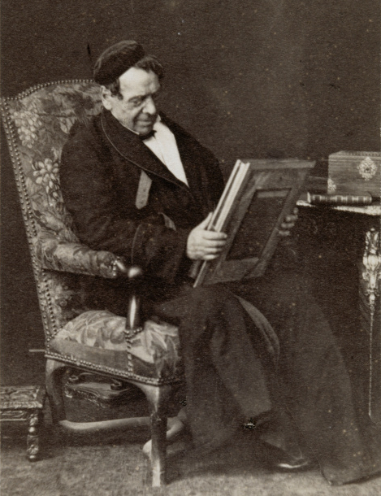
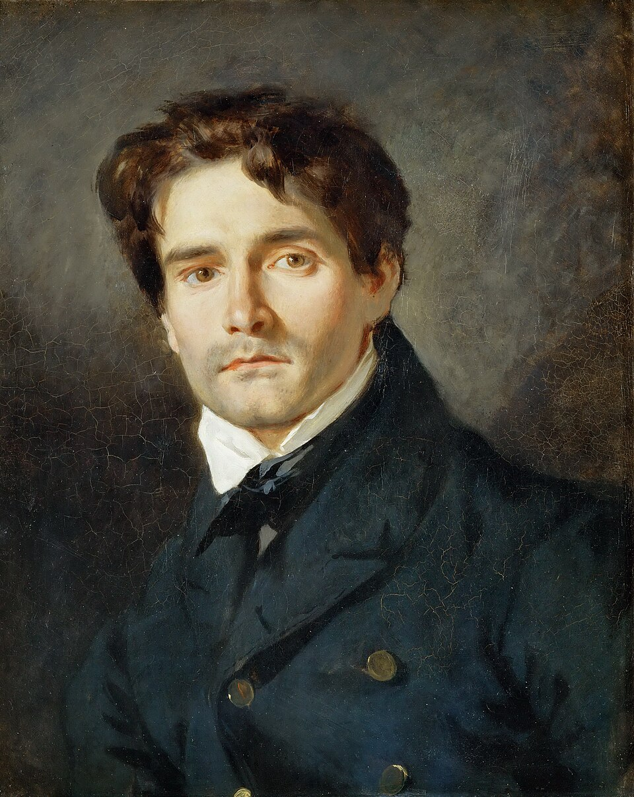
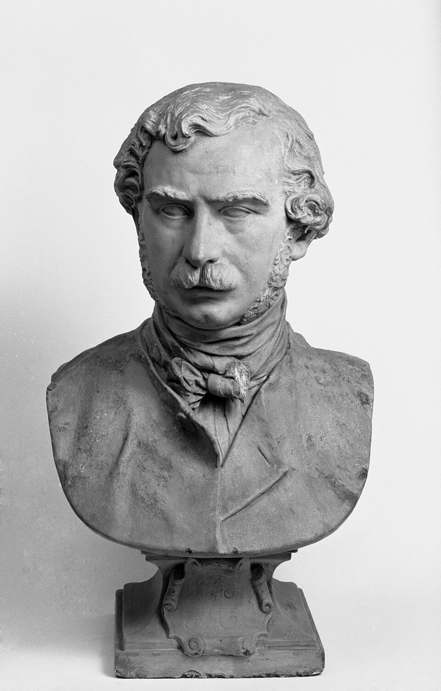
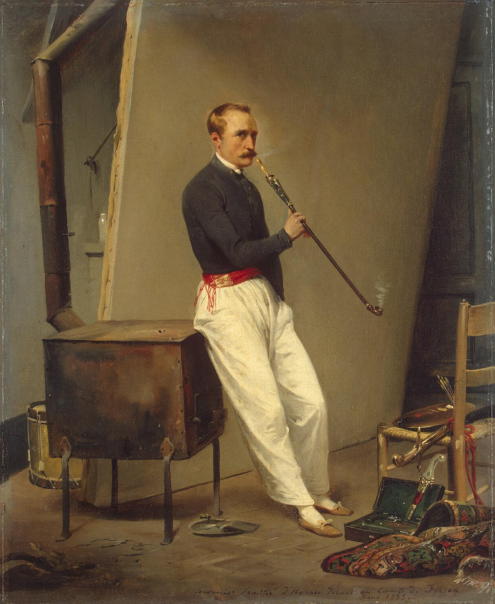

Salon de 1845
Portraits
Portraits
LÉON COIGNET
Léon Cogniet

Un très-beau portrait de femme, dans le Salon carré.
A very beautiful portrait of a woman, in the Salon Carré.
M. Léon Coignet est un artiste d’un rang très-élevé dans les régions moyennes du goût et de l’esprit. — S’il ne se hausse pas jusqu’au génie, il a un de ces talents complets dans leur modération qui défient la critique. M. Cogniet ignore les caprices hardis de la fantaisie et le parti pris des absolutistes. Fondre, mêler, réunir tout en choisissant, a toujours été son rôle et son but ; il l’a parfaitement bien atteint. Tout dans cet excellent portrait, les chairs, les ajustements, le fond, est traité avec le même bonheur.
M. Léon Cogniet is an artist of very high rank in the middle regions of taste and intellect. — If he does not rise to genius, he possesses one of those talents so complete within their moderation that they disarm criticism. M. Cogniet knows nothing of fantasy’s bold caprices or of the fixed positions of absolutists. To fuse, blend, and unite while still choosing has always been his role and his aim; he has achieved it perfectly. Everything in this excellent portrait—the flesh, the dress, the background—is handled with equal success.
DUBUFE
Dubufe

M. Dubufe est depuis plusieurs années la victime de tous les feuilletonistes artistiques . Si M. Dubufe est bien loin de sir Thomas Lawrence, au moins n’est-ce pas sans une certaine justice qu’il a hérité de sa gracieuse popularité. — Nous trouvons, quant à nous, que le Bourgeois a bien raison de chérir l’homme qui lui a créé de si jolies femmes, presque toujours bien ajustées.
For several years M. Dubufe has been the victim of every art feuilletonist. If M. Dubufe is very far from Sir Thomas Lawrence, it is nevertheless not wholly unjust that he should have inherited something of Lawrence’s gracious popularity. — For our part, we think the Bourgeois is quite right to cherish the man who has created such pretty women for him, almost always so prettily dressed.
M. Dubufe a un fils qui n’a pas voulu marcher sur les traces de son père, et qui s’est fourvoyé dans la peinture sérieuse.
M. Dubufe has a son who refused to follow in his father’s footsteps and lost his way in serious painting.
M lle EUGÉNIE GAUTIER
M Lle Eugénie Gautier

Beau coloris, — dessin ferme et élégant. — Cette femme a l’intelligence des maîtres ; — elle a du Van Dyck ; — elle peint comme un homme. — Tous ceux qui se connaissent en peinture se rappellent le modelé de deux bras nus dans un portrait exposé au dernier Salon. La peinture de mademoiselle Eugénie Gautier n’a aucun rapport avec la peinture de femme, qui, en général, nous fait songer aux préceptes du bonhomme Chrysale.
Beautiful color, — firm and elegant drawing. — This woman has the intelligence of the masters; — there is something of Van Dyck in her; — she paints like a man. — Everyone who knows painting remembers the modeling of two bare arms in a portrait shown at the last Salon. Mademoiselle Eugénie Gautier’s painting has nothing in common with what is usually called women’s painting, which generally makes us think of the good Chrysale’s precepts.
BELLOC
Belloc

M. Belloc a envoyé plusieurs portraits. — Celui de M. Michelet nous a frappé par son excellente couleur. — M. Belloc, qui n’est pas assez connu, est un des hommes d’aujourd’hui les plus savants dans leur art. — Il a fait des élèves remarquables, — mademoiselle Eugénie Gautier, par exemple, à ce que nous croyons. — L’an passé, nous avons vu de lui, aux galeries du boulevard Bonne-Nouvelle, une tête d’enfant qui nous a rappelé les meilleurs morceaux de Lawrence.
M. Belloc has sent several portraits. — The one of M. Michelet struck us by the excellence of its color. — M. Belloc, who is not nearly well enough known, is one of the most learned men practicing his art today. — He has produced remarkable pupils—Mademoiselle Eugénie Gautier, for example, if we are not mistaken. — Last year, in the galleries of the boulevard Bonne-Nouvelle, we saw from him a child’s head that recalled Lawrence at his best.
TISSIER
Tissier

est vraiment coloriste, mais n’est peut-être que cela ; — c’est pourquoi son portrait de femme, qui est d’une couleur distinguée et dans une gamme de ton très-grise, est supérieur à son tableau de religion.
is a true colorist, though perhaps nothing more; — which is why his portrait of a woman, distinguished in color and pitched in a very gray scale of tones, is superior to his religious picture.
RIESENER
Riesener

est avec M. Planet un des hommes qui font honneur à M. Delacroix. — Le portrait du docteur H. de Saint-A… est d’une franche couleur et d’une franche facture.
is, with M. Planet, one of the men who do honor to M. Delacroix. — The portrait of Doctor H. de Saint-A… has honest color and honest handling.
DUPONT
Dupont

Nous avons rencontré un pauvre petit portrait de demoiselle avec un petit chien, qui se cache si bien qu’il est fort difficile à trouver ; mais il est d’une grâce exquise. — C’est une peinture d’une grande innocence, — apparente, du moins, mais très-bien composée, — et d’un très-joli aspect ; — un peu anglais.
We came upon a poor little portrait of a young lady with a little dog, hidden so well that it is very hard to find; but it has exquisite grace. — It is a painting of great innocence—apparent innocence, at least—yet very well composed, and very pretty in effect; — a little English.
HAFFNER
Haffner

Encore un nouveau nom, pour nous, du moins. M. Haffner a, dans la petite galerie, à une très-mauvaise place, un portrait de femme du plus bel effet. Il est difficile à trouver, et vraiment c’est dommage. Ce portrait dénote un coloriste de première force. Ce n’est point de la couleur éclatante, pompeuse ni commune, mais excessivement distinguée, et d’une harmonie remarquable. La chose est exécutée dans une gamme de ton très-grise. L’effet est très-savamment combiné, doux et frappant à la fois. La tête, romantique et doucement pâle, se détache sur un fond gris, encore plus pâle autour d’elle, et qui, se rembrunissant vers les coins, a l’air de lui servir d’auréole. — M. Haffner a, de plus, fait un paysage d’une couleur très-hardie — un chariot avec un homme et des chevaux, faisant presque silhouette sur la clarté équivoque d’un crépuscule. — Encore un chercheur consciencieux… que c’est rare !…
Another new name—for us, at least. M. Haffner has, in the small gallery and in a very bad position, a portrait of a woman of the finest effect. It is difficult to find, and that is truly a pity. The portrait reveals a colorist of the first order. Its color is neither dazzling, pompous, nor commonplace, but exceedingly distinguished and remarkably harmonious. The whole thing is carried out in a very gray scale of tones. The effect is most knowingly contrived, gentle and striking at once. The head, romantic and softly pale, stands out against a gray background, paler still around it and darkening toward the corners, so that it seems to form a halo. — M. Haffner has also painted a landscape of very bold color—a cart with a man and horses, almost in silhouette against the uncertain light of twilight. — Another conscientious seeker… how rare that is!…
PÉRIGNON
Pérignon

a envoyé neuf portraits, dont six de femmes. — Les têtes de M. Pérignon sont dures et lisses comme des objets inanimés. — Un vrai musée de Curtius.
has sent nine portraits, six of them women. — M. Pérignon’s heads are hard and smooth like inanimate objects. — A veritable Musée Curtius.
HORACE VERNET
Horace Vernet

M. Horace Vernet, comme portraitiste, est inférieur à M. Horace Vernet, peintre héroïque. Sa couleur surpasse en crudité la couleur de M. Court.
M. Horace Vernet, as a portraitist, is inferior to M. Horace Vernet, heroic painter. His color surpasses M. Court’s in rawness.
HIPPOLYTE FLANDRIN
Hippolyte Flandrin

M. Flandrin n’a-t-il pas fait autrefois un gracieux portrait de femme appuyée sur le devant d’une loge avec un bouquet de violettes au sein ? Mais il a échoué dans le portrait de M. Chaix-d’Est-Ange. Ce n’est qu’un semblant de peinture sérieuse ; ce n’est pas là le caractère si connu de cette figure fine, mordante, ironique. — C’est lourd et terne.
Did M. Flandrin not once paint a graceful portrait of a woman leaning on the front of a theater box, with a bouquet of violets at her breast? But he has failed in the portrait of M. Chaix-d’Est-Ange. It is only the semblance of serious painting; this is not the familiar character of that fine, biting, ironic face. — It is heavy and dull.
Nous venons de trouver, ce qui nous a fait le plus vif plaisir, un portrait de femme de M. Flandrin, une simple tête qui nous a rappelé ses bons ouvrages. L’aspect en est un peu trop doux et a le tort de ne pas appeler les yeux comme le portrait de la princesse Belg…, de M. Lehmann. Comme ce morceau est petit, M. Flandrin l’a parfaitement réussi. Le modelé en est beau, et cette peinture a le mérite, rare chez ces messieurs, de paraître faite tout d’une haleine et du premier coup.
We have just found, to our keenest pleasure, a portrait of a woman by M. Flandrin, a simple head that recalled his good works to us. Its effect is a little too gentle, and it suffers from not calling to the eye as the portrait of Princess Belg… by M. Lehmann does. Because the piece is small, M. Flandrin has succeeded perfectly. The modeling is beautiful, and the painting has the merit—rare among these gentlemen—of looking as though it were done in a single breath, at the first stroke.
RICHARDOT
Richardot

a peint une jeune dame vêtue d’une robe noire et verte, — coiffée avec une afféterie de keepsake. — Elle a un certain air de famille avec les saintes de Zurbaran, et se promène gravement derrière un grand mur d’un assez bon effet. C’est bon — il y a là dedans du courage, de l’esprit, de la jeunesse.
painted a young lady dressed in black and green, — her hair arranged with the studied prettiness of a keepsake. — She has a certain family resemblance to Zurbarán’s saints, and walks gravely behind a large wall of rather good effect. It is good—there is courage, wit, and youth in it.
VERDIER
Verdier

a fait un portrait de mademoiselle Garrique, dans le Barbier de Séville. Cela est d’une meilleure facture que le portrait précédent, mais manque de délicatesse.
painted a portrait of Mademoiselle Garrique in The Barber of Seville. It is better handled than the preceding portrait, but lacks delicacy.
HENRI SCHEFFER
Henri Scheffer

Nous n’osons pas supposer, pour l’honneur de M. Henri Scheffer, que le portrait de Sa Majesté ait été fait d’après nature. — Il y a dans l’histoire contemporaine peu de têtes aussi accentuées que celle de Louis-Philippe. — La fatigue et le travail y ont imprimé de belles rides, que l’artiste ne connaît pas. — Nous regrettons qu’il n’y ait pas en France un seul portrait du Roi. — Un seul homme est digne de cette œuvre : c’est M. Ingres.
For M. Henri Scheffer’s honor, we dare not suppose that the portrait of His Majesty was painted from life. — There are few heads in contemporary history as strongly marked as Louis-Philippe’s. — Weariness and labor have inscribed beautiful wrinkles upon it, wrinkles of which the artist knows nothing. — We regret that there is not a single portrait of the King in France. — Only one man is worthy of that task: M. Ingres.
Tous les portraits de Henri Scheffer sont faits avec la même probité, minutieuse et aveugle ; la même conscience, patiente et monotone.
All Henri Scheffer’s portraits are made with the same meticulous and blind probity; the same patient and monotonous conscientiousness.
LEIENDECKER
Leiendecker

En passant devant le portrait de mademoiselle Brohan, nous avons regretté de ne pas voir au Salon un autre portrait, — qui aurait donné au public une idée plus juste de cette charmante actrice, — par M. Ravergie, à qui le portrait de madame Guyon avait fait une place importante parmi les portraitistes.
Passing before the portrait of Mademoiselle Brohan, we regretted not seeing at the Salon another portrait—one that would have given the public a truer idea of this charming actress—by M. Ravergie, whose portrait of Madame Guyon had won him an important place among portraitists.
DIAZ
Diaz

M. Diaz fait d’habitude de petits tableaux dont la couleur magique surpasse les fantaisies du kaléidoscope. — Cette année, il a envoyé de petits portraits en pied. Un portrait est fait, non-seulement de couleur, mais de lignes et de modelé. — C’est l’erreur d’un peintre de genre qui prendra sa revanche.
M. Diaz usually paints small pictures whose magical color surpasses the fantasies of the kaleidoscope. — This year he has sent small full-length portraits. A portrait is made not only of color, but of line and modeling. — It is the mistake of a genre painter who will have his revenge.